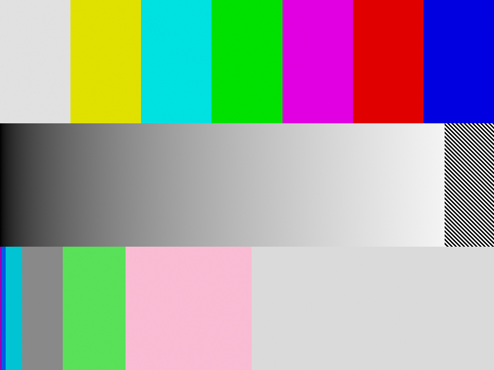
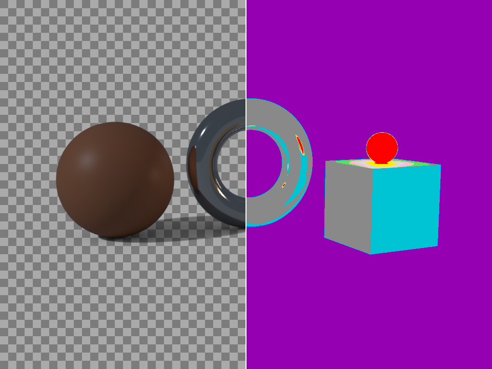
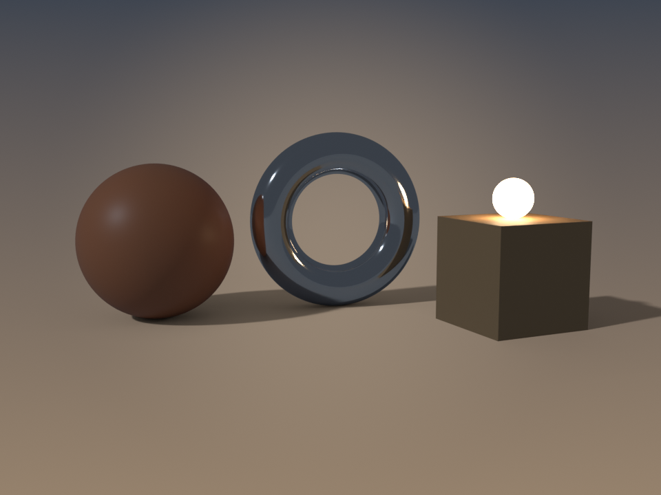
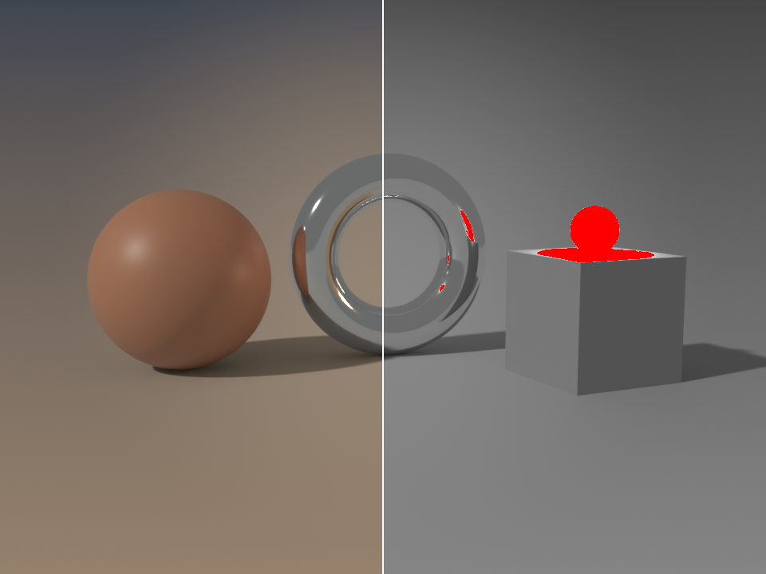
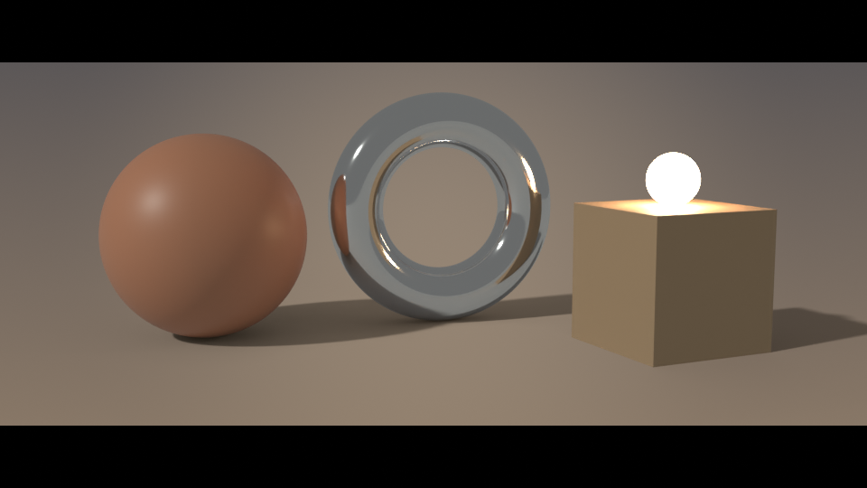
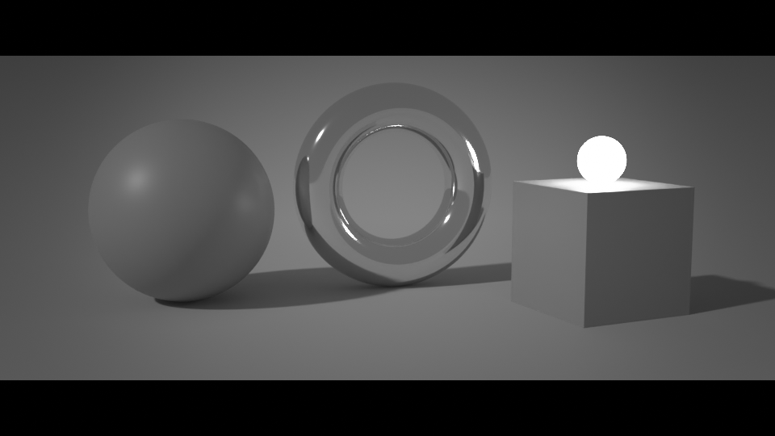
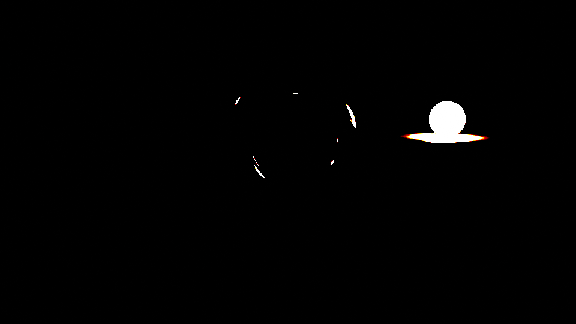

Check and grade a shot
A render comes in dark, cold and with no background. Before touching a colour, a compositor looks at it with tools that show what the viewer hides: test patterns, false colour, a clip check. Then the shot is put together and graded, reformatted for delivery, and checked again. Seven steps, all with the free standard library.

Before you start
You need Blender 5 and the Base Node add-on. Everything this tutorial calls is in its free standard library:
| Module | What it gives here |
|---|---|
qc | Test patterns (colour bars, ramp, radial) and the checks of an image: false colour, zebra, clip check, alpha check, difference as heat. |
grade | Nuke's Grade, exposure in stops, saturation, soft clip. |
merge | Nuke's Merge operations: over, screen, keymix. |
mask2d | Masks drawn by signed distances: a rounded box for the vignette, the letterbox. |
stmap | Reformat (and Tile, Mirror) by STMaps, as Nuke's STMap does. |
The graphs read the Render Layers node: any render will do. This one has its film transparent (Render Properties, Film, Transparent) and its floor a shadow catcher, so the objects and their shadow come with an alpha and no background. Set the scene's View Transform to Standard (Color Management): the checks draw fixed colours that a tone curve such as AgX would change.
Every block below is a complete .bn file, its code beside the nodes it builds. Two ways to try a step:
- Drag it. Drag the file icon of its block, or its title, onto Blender and keep Import into the .blend:
check_and_gradebecomes the scene's compositor, if the scene has none yet. A click on the file icon downloads the file instead. - Paste it. Press the copy button of its block, open the Compositor, press Ctrl+Shift+V.
Render with F12 to see it. The pictures are made from these exact files by render.py: it renders the plate once with Cycles, 960 × 720, then runs each step on it. It also reads the float values of the steps, before the view transform, to check the numbers this page gives.
1. Test patterns
A check is only as good as the pipe it looks through. Before reading a render, feed the compositor images whose values you know, and see whether they come out as they should.
qc draws them at the size of the image it is given, without reading its pixels: here, the size of the render.
step1_patterns.bn: check_and_grade
- Colour bars, top. SMPTE's seven bars at 75 %: every channel is 0 or 0.75. With the Standard view, 0.75 shows as 224 out of 255, not 191: the screen gets the value through the sRGB curve.
render.pychecks that the float values of the bars are 0 and 0.75, nothing else. - A ramp, middle, from 0 on the left to 1 on the right, in linear light. Middle grey, 0.18, sits at 18 % of the width, but looks like the middle of the ramp: the eye, and the sRGB curve, give more room to the darks.
zebrastripes everything above 0.9, the last tenth of the width. - False colour, bottom: the same ramp, each pixel coloured by its stops from middle grey. Green is half a stop either side of 0.18, from 12.7 % to 25.5 % of the width; pink and light grey are the stops above it, up to 1. Each stop down is half as wide as the one above it: on a linear ramp, the darks are crowded on the left.

| False colour | Stops from 0.18 | Luminance |
|---|---|---|
| purple | under −6 | under 0.0028 |
| blue | −6 to −4 | to 0.011 |
| teal | −4 to −2 | to 0.045 |
| dark grey | −2 to −½ | to 0.127 |
| green | −½ to +½ | to 0.255 |
| pink | ½ to 1½ | to 0.51 |
| light grey | 1½ to 2½ | to 1.02 |
| yellow | 2½ to 4 | to 2.88 |
| red | over 4 | over 2.88 |
Try: ramp(frame, to: (8.0, 8.0, 8.0, 1.0)): a ramp from 0 to 8. Yellow and red appear, the zebra covers almost all of it, and the stops below middle grey shrink to a few pixels on the left.
2. Read the plate
Now the render, the plate. On a monitor it looks dark; how dark, and is anything burnt? Two checks, side by side, as a viewer's wipe shows two images: the left of one, the right of the other.
step2_read.bn: check_and_grade, wipe, plate
- The alpha check, left, puts the plate over a grey checker of 16-pixel squares. Where the plate is transparent, the checker shows: there is no background. Under the ball, the shadow darkens the checker: the shadow catcher wrote it as alpha over black, a shadow to lay on any background.
- False colour, right. Most of the crate and the ring are teal and dark grey: two stops or more under middle grey. The plate is under. The bulb is red, more than 4 stops over: some pixels are far above 1, while most of the frame is far below it. The empty frame is purple: transparent pixels have no light.
Every render reaches the compositor premultiplied: its colours are already multiplied by its alpha. A pixel half covered by the ball has half the ball's colour and an alpha of 0.5. Every tool of these modules expects that, and says so.

3. Over a background
The plate needs a background. Here it is a studio backdrop made in the graph from qc's patterns, which work as image generators as well as checks; in a real shot it would be another plate.
step3_over.bn: background, check_and_grade
- The wall.
rampat an angle of 1.5708 radians, 90°, goes from bottom to top: a warm floor, a dark top. - The pool of light.
radialis a soft white disk, its colour and its alpha both falling off to 0. Times a warm colour, it is laid on the wall byscreen, which lightens like a second projector. Why notplus? It adds the alphas too: an opaque wall plus the pool has an alpha up to 2. A tool that divides by the alpha, as the grade of step 4 does, would then go wrong.screengivesa + b − ab, 1 over an opaque wall. - Over.
over(fg, bg)isA + B(1 − a): the plate, plus the background where the plate does not cover it. Since A is premultiplied, its edges and its shadow are already weighted by their alpha, and nothing has to be multiplied again.matte, the over of a straight image, would weight them a second time.

4. Grade the plate
Step 2 said the plate is under, and step 3 shows it is cold next to the backdrop. So the grade goes on the plate alone, before the over: the backdrop is right as it is.
step4_grade.bn: matched, shot, check_and_grade
- Exposure first:
exposure_stops(1.5)multiplies the colours by 21.5, about 2.83, as opening the lens a stop and a half would. Fixing the level first leaves the grade a smaller job. - The grade.
gainof 1.12, 1.0, 0.8 on red, green and blue warms the plate toward the backdrop;liftraises its blacks by about one hundredth, warm too, so its shadows are not deeper than the room's. - Saturation at 0.85 takes back the extra colour the gain gave the terracotta.
- Premultiplied. A lift added to a premultiplied image would light its transparent pixels, and the whole frame would get a veil.
gradedivides the colours by the alpha, grades them, multiplies them back: a transparent pixel stays 0 and an edge keeps its colour.
The right half of the picture is clip_check of the shot: grey for the luminance, red where a channel is above 1, blue where one is below 0. The grade pushed the bulb, the top of the crate it lights and the glints of the ring above 1. The screen shows all of them as flat white.

5. Reformat and letterbox
The plate is 4:3, 960 × 720; the delivery is 16:9, 960 × 540, letterboxed to 2.39:1.
step5_deliver.bn: delivery, check_and_grade
- Reformat by Fill.
reformat(shot(), 960, 540, Fill)fills the new frame and cuts what passes it: the width is kept, 90 rows go at the top and at the bottom.Fitwould keep the whole plate, with empty sides;Distortwould squash it. - An STMap.
stmapmoves pixels the way Nuke's STMap does: an image whose red and green say, for each pixel of the result, where to read the source, from 0 to 1 across it.reformatcomputes that map on a 960 × 540 canvas, then reads the shot through it. The result has the size of the map. - The letterbox.
letterbox(framed, 2.39)keeps a band 960 pixels wide and about 402 high in the middle, and paints the 69 rows above and below it black. ItsMaskoutput is that band, 1 inside.
From this step on, the graph delivers 960 × 540: set the scene's resolution to match, as render.py does.

Try: reformat(mirror(shot()), 960, 540, Fill), with mirror added to use stmap: the shot turned over left to right, the crate on the left. mirror is an STMap too.
6. Vignette and soft clip
Two last touches, after the reformat so that they follow the delivered frame, and before the letterbox so that its bars stay black.
step6_finish.bn: vignette, delivery
- The vignette.
box_maskdraws a rounded box, half 0.7 wide and 0.3 high in the frame's uniform coordinates (its width from −1 to 1), its corners rounded by 0.3 and its edge feathered over 0.9: 1 in the middle, falling to 0 toward the edges.keymixtakes the image there and the image a stop darker elsewhere. The eye goes to the middle. - The soft clip. Step 4 found values above 1, which the screen cuts flat.
soft_clip(start: 0.8, limit: 1.0)leaves everything below 0.8 as it is, and bends what is above toward 1 without reaching it: the bulb keeps a little shape instead of a flat disk.render.pychecks that the delivery is between 0 and 1.
Try: vignette(framed, -2.0): two stops, a heavy vignette.
7. The final check
Before it leaves, the delivery is checked as the plate was. Has the soft clip done its job, and only its job?
step7_check.bn: check_and_grade, soft_clip_heat, delivery
- The clip check of the delivery: grey from edge to edge. No red, so no channel above 1; no blue, so none below 0, which a lift could have caused.
- The difference as heat.
deliverynow has aclipinput that fades the soft clip out.diff_viewcompares the delivery with and without it, the difference times 4: black where they are the same, then red, yellow, white. Only the bulb, the top of the crate and the glints of the ring light up.render.pycounts the pixels it changed by more than a thousandth: under 2 % of the frame, about 1 % here.

check_and_grade: the clip check of the delivery. Compare with step 4: the red is gone.
soft_clip_heat: where the soft clip changed the delivery.
To see the heat in Blender, have check_and_grade return soft_clip_heat(). qc has one more check worth running on any delivery: nan_inf_check, which paints the pixels that are not numbers, or infinite, before a render farm or a codec finds them.
Take it to Blender
The finished compositor, in one file. Drag the card onto Blender and keep Import into the .blend: check_and_grade becomes the scene's compositor, if it has none yet. A click on the card downloads the file.
The steps before it, to start again from any of them:
The files, with the script that renders this page's pictures, are in examples/tutorials/check_and_grade/.